2025北京海淀六年级（下）期末
1. 一款"几何形状配对玩具"的面板从正面看有四个窟窿，如图所示。有一块积木既能塞满正方形窟窿，又能塞满圆形窟窿，这块积木的形状可能是（ ）。
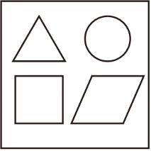
A. 长方体 B. 正方体 C. 圆柱 D. 圆锥
2. 联欢会上，同学们用摸球的方式决定每人表演一个什么节目。轮到笑笑摸球了，笑笑表演（ ）节目的可能性最大。
规则：摸到红球，讲故事 | 摸到绿球，说绕口令 | 摸到黄球，唱歌 | 摸到白球，跳舞
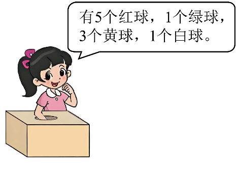
A. 讲故事 B. 说绕口令 C. 唱歌 D. 跳舞
3. 奇思想利用图形的运动把阴影部分补成一个长方形，可以把三角形①（ ）。
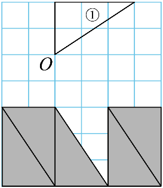
A. 绕点O逆时针旋转90°，再向下平移2格 B. 绕点O顺时针旋转90°，再向下平移2格
C. 绕点O逆时针旋转90°，再向下平移5格 D. 绕点O顺时针旋转90°，再向下平移5格
4. 如图大正方形表示"1"，淘气想涂色表示0.6。他已经涂了4个小方格，还要再涂（ ）个小方格。
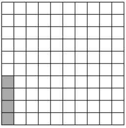
A. 96 B. 56 C. 20 D. 2
5. 淘气在探究圆柱体积计算方法时，将一个圆柱沿底面直径等分后，拼成一个近似的长方体，如图所示。拼成后的近似长方体的长是（ ）。
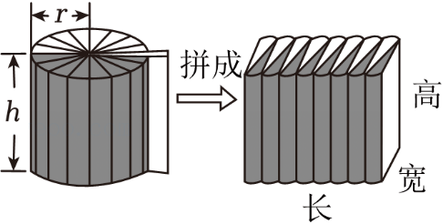
A. B. πr C. 2πr D. πr²
6. "巧手工作坊"的同学们准备折叠一个仓库模型，如图所示。下面四幅图分别按虚线进行折叠，能折叠成这个仓库模型的是（ ）。
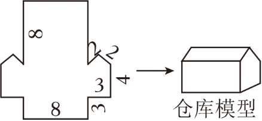
A.
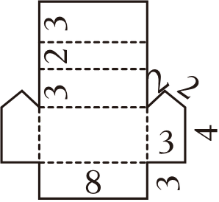
B.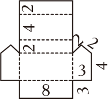
C.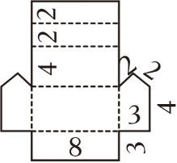
D.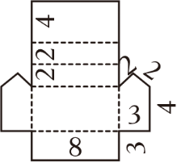
7. 王东、赵楠、孙奇三位同学在大课间活动时进行了1分钟踢毽子比赛，成绩如图。张老师计算了他们5次比赛的平均成绩，王东是41.8个、赵楠是40.6个、孙奇是44.6个。结合数据分析，以下说法中不合理的是（ ）。
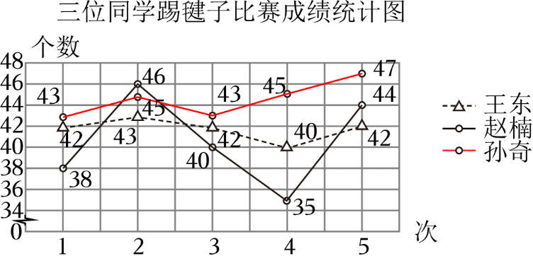
A. 从平均成绩看，王东的表现在三人中处于中等。
B. 赵楠的最高成绩与最低成绩相差11个，是三人中波动最大的。
C. 孙奇不仅平均成绩高，而且总体稳定，还出现过三人中的最好成绩，他的表现是最好的。
D. 五次比赛中，每次王东的成绩都不是三人中最高的，第六次比赛他也一定不是三人中最高的。
8. 把长方形甲按比缩小后得到长方形乙，如下图所示。根据图中信息，同学们列出了下面的四个等式，其中正确的（ ）。
① 16－12＝24－x ② 16∶24＝12∶x
③ 12∶16＝x∶24 ④ x∶12＝16∶24
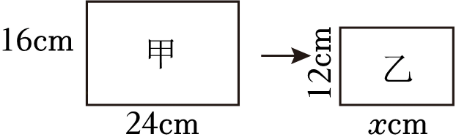
A. 只有① B. 只有② C. 只有②③ D. 只有③④
9. 教学楼的底面是长60米，宽20米的长方形。在绘制它的平面图时，乐乐选择的比例尺是1∶2000，淘气选择的比例尺是1∶1000。以下说法正确的（ ）。
① 在乐乐的平面图中，教学楼底面的图上长是实际长的
② 在淘气的平面图中，教学楼底面的实际面积是图上面积的1000倍
③ 在两幅平面图中，教学楼底面的长都是宽的3倍
④ 在两幅平面图中，乐乐画的教学楼底面的面积比淘气的小
A. 只有① B. 只有③ C. 只有①③④ D. 有①②③④
10. 一个圆锥形水杯，如下图所示。如果用它向如图三个容器中各倒入一满杯水，容器中水的高度会有怎样的关系？（单位：cm）同学们有以下想法，其中正确的（ ）。
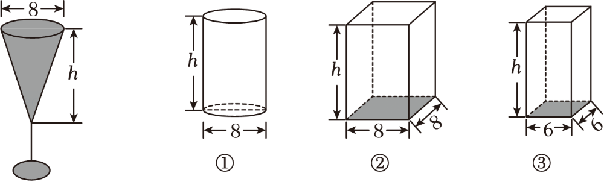
淘气：①号容器水的高度等于
笑笑：②号容器水的高度小于
奇思：③号容器水的高度比②号的高
A. 只有淘气 B. 只有奇思 C. 只有淘气和笑笑 D. 有淘气、笑笑和奇思
11. 280mL＝（ ）L 1.85m²＝（ ）dm²
12. 根据下面信息判断，这两个数分别是（ ）和（ ）。
"我和另一个数都是质数，我们的和是15。"
13. 装修师傅在粉刷墙壁时使用折叠梯，梯子两腿与地面的夹角均为70°，如图所示。这时梯子 ______ 安全使用条件。（填"符合"或"不符合"）
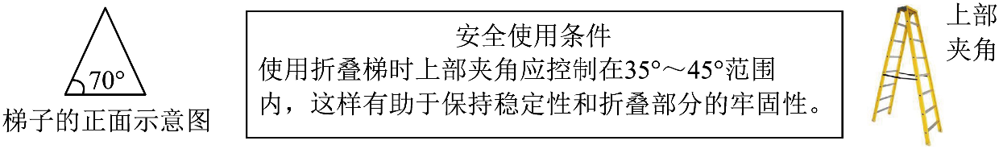
14. 在如图平行四边形中以CD为底，分别画一个面积最大的三角形并涂上阴影。（画出三种）
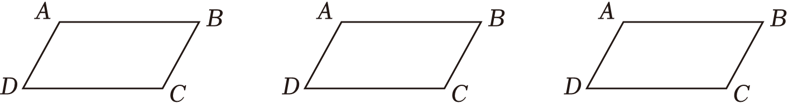
15. 复习课上，同学们在研究整数、小数和分数加法计算方法的共同点。
（1）笑笑通过举例进行研究，如图所示。同学们发现算式2是错误的，请你在右框中改正。
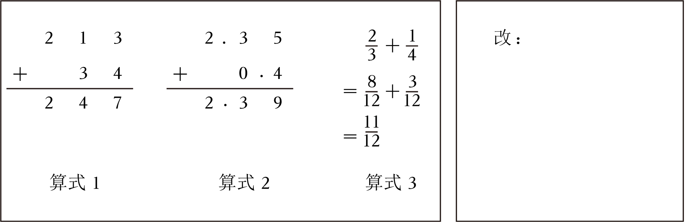
（2）请你结合数位顺序表，解答笑笑的疑问。
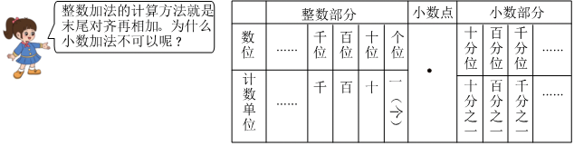
我的解答：________________。
（3）算式3是分数加法，计算时先通分再相加，和整数、小数看起来都不一样。整数、小数和分数加法计算方法有什么共同点呢？
共同点：________________。
16. 计算下面各题。
（1）（14.6－4.2）＋2.6 （2）3.45×7.6＋6.55×7.6
（3） （4）
（4）
17. 解方程。
（1） （2）9x－4.5＝36
18. 同学们开展探秘"北京中轴线"的实践活动，查到以下信息。如果以1∶30000的比例尺画出"北京中轴线"的平面图，图中"北京中轴线"全长多少厘米？
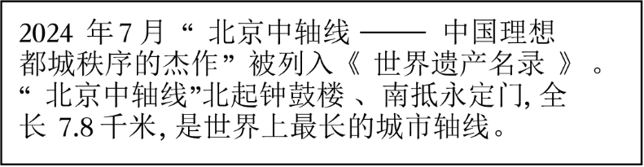
19. 小东家有一堆稻谷，堆成了圆锥形。稻谷堆高为1.2米，底面直径为2米。如果每立方米稻谷的质量为700千克，这堆稻谷的质量为多少千克？
20. 某种铁丝的质量和长度的关系如图所示，根据如图回答问题。
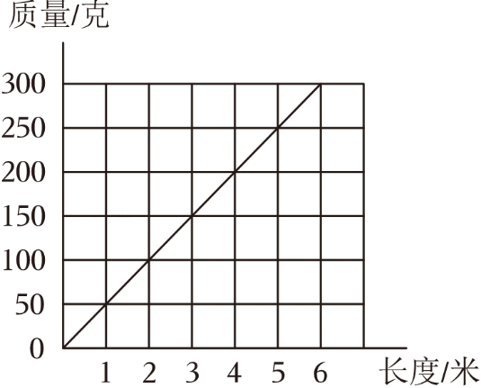
（1）3米的铁丝质量是（ ）克。
（2）这种铁丝的长度与质量成（ ）比例。（填"正"或"反"）
（3）淘气通过称质量确定铁丝的长度，测得同种铁丝的质量是1830克，这捆铁丝的长度是多少米？
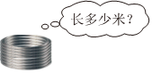
21. 为提高树木抗寒性和防虫害能力，工人师傅给横截面直径约为0.5米的大树树干底部涂满石灰浆，如图所示。涂石灰浆部分的面积大约是多少平方米？
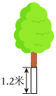
22. 一瓶果汁，淘气第一次倒出了这瓶果汁的25%，如图所示，第二次又倒出200毫升。他发现两次倒出的果汁与瓶中剩下的体积比是3∶1，这瓶果汁原来一共是多少毫升？
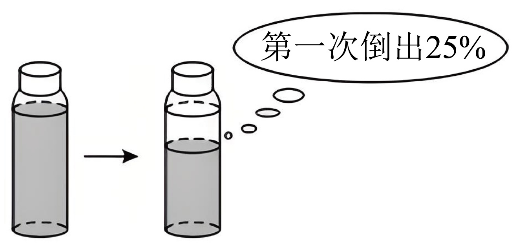
23. 人口规模、人口结构、人口变化趋势能够反映一个国家的综合人口情况，也是影响国家相关政策制定的重要因素。下面统计表、统计图呈现了中国近几年人口情况，请你根据数据回答问题。
中国近5年人口总数统计表
| 年份 | 2020年 | 2021年 | 2022年 | 2023年 | 2024年 |
|---|---|---|---|---|---|
| 人口（万人） | 141212 | 141260 | 141175 | 140967 | 140828 |
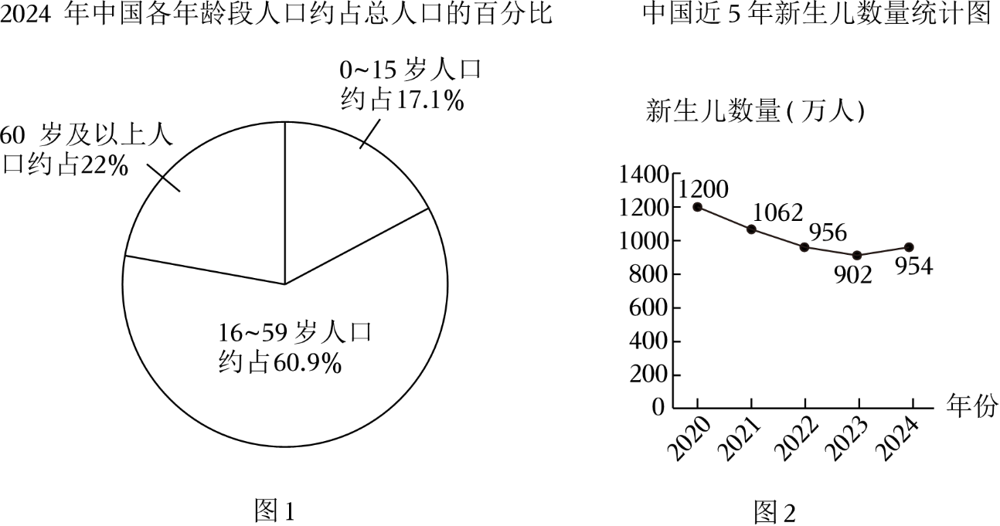
（1）结合信息判断，中国是否已经进入老龄化社会？（ ）（填"是"或"否"）
当一个国家或地区60岁及以上人口占总人口的百分比达到10%，即被视为进入老龄化社会。
（2）从图2中可以看出，2020～2024年中国新生儿数量是如何变化的？
（3）结合以上图表信息，针对2026年中国综合人口情况的某一方面进行预测，并写出你预测的依据。
我的预测：（ ）。我预测的依据：________________。
24. 观察与探索。
（1）图1中有一个长方形ABCD，其中点A用数对（3，2）表示，点B用数对（6，2）表示，其它两个点用数对表示是：C（ ），D（ ）。
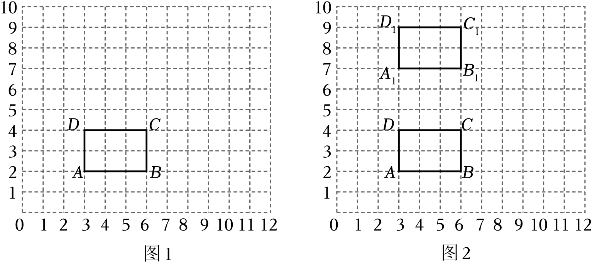
（2）奇思将长方形ABCD向上平移5格，得到长方形A₁B₁C₁D₁，如图2所示。
这个长方形的四个顶点用数对表示分别是：A₁（ ），B₁（ ），C₁（ ），D₁（ ）。
与长方形ABCD比，我发现表示长方形A₁B₁C₁D₁顶点的数对中，第1个数（ ），第2个数（ ）。（填"不变"、"增加5"或"减少5"）
（3）笑笑将长方形ABCD先向上平移4格，再向右平移5格，得到长方形A₂B₂C₂D₂。与长方形ABCD比，我发现表示长方形A₂B₂C₂D₂顶点的数对中，第1个数（ ），第2个数（ ）。
（4）结合上面研究，围绕"数对变化与图形变化的关系"，写出一个猜想或提出一个挑战性问题。
我的猜想或问题：（ ）。
| 1 | 2 | 3 | 4 | 5 | 6 | 7 | 8 | 9 | 10 |
|---|---|---|---|---|---|---|---|---|---|
| C | A | B | B | B | D | D | C | C | D |
11. 280mL＝0.28L 1.85m²＝185dm²
1L＝1000mL，1m²＝100dm²
12. 2 和 13
15为奇数，只有偶数+奇数=奇数，质数中仅2是偶数。
13. 符合
三角形内角和180°，顶角：180°－70°－70°＝40°，在35°～45°范围内。
14. 以CD为底，顶点取在AB边上，高=平行四边形高，即最大。
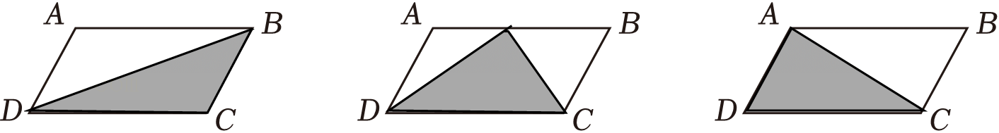
15.
（1）小数点对齐（相同数位对齐）后相加。
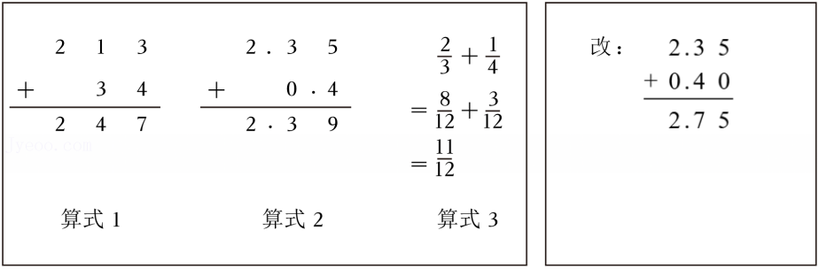
（2）整数末尾对齐即相同数位对齐；小数位数不同时计数单位不同，只有小数点对齐，相同数位才能对齐。
（3）整数、小数、分数加法的共同点：把相同计数单位的数相加。
16.
（1）= 10.4＋2.6 = 13
（2）= 7.6×（3.45＋6.55）= 7.6×10 = 76
（3）= 5－ =
（4）=
17.
（1）0.5x＝4，x＝8
（2）9x＝40.5，x＝4.5
18. 7.8千米＝780000厘米，780000×＝26厘米
19. 半径＝1米，V＝×3.14×1²×1.2＝1.256m³
1.256×700＝879.2千克
20.（1）150 （2）正
（3）1830∶x＝50，x＝36.6米
21. 3.14×0.5×1.2＝1.884平方米
22. 两次倒出占  ，200÷(－25%)＝200÷＝400毫升
，200÷(－25%)＝200÷＝400毫升
23.（1）是（22%＞10%）
（2）整体下降，2024年较2023年稍有反弹。
（3）预测：老年人口继续增加。依据：2024年60岁以上约占22%，随着时间推移，更多人口步入老年，且新生儿减少。
24.（1）C（6，4）D（3，4）
（2）A₁（3，7）B₁（6，7）C₁（6，9）D₁（3，9）；第1个数不变，第2个数增加5
（3）第1个数增加5，第2个数增加4
（4）（开放题）图形在平面内沿不同方向进行不同距离的平移，数对的变化有什么通用规律？